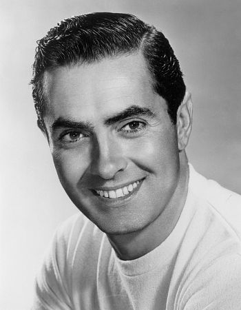
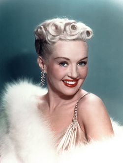
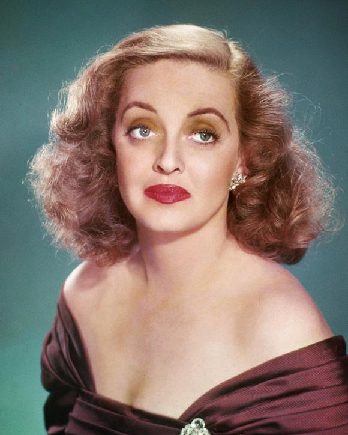
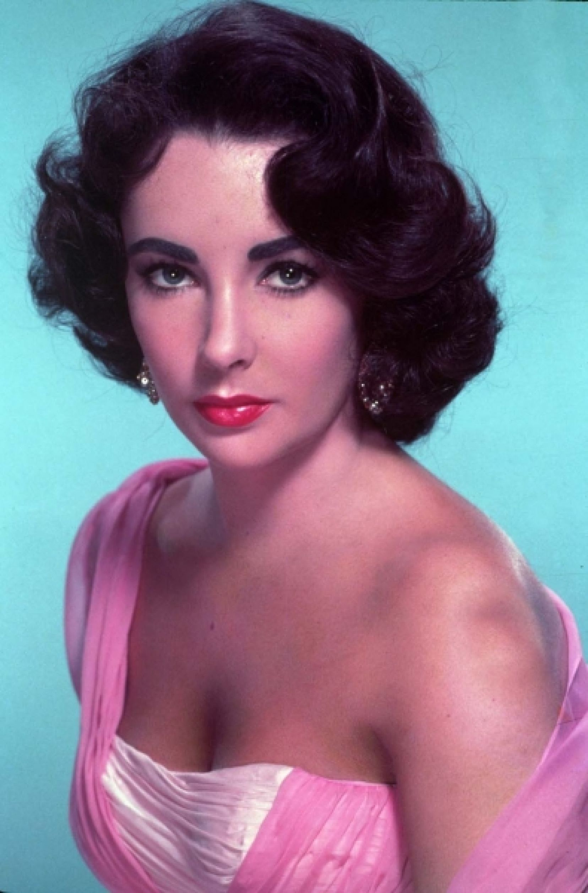
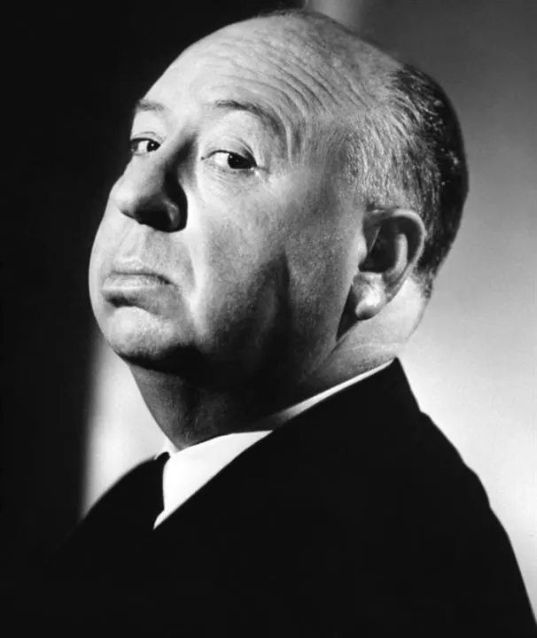
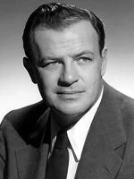

La 20th Century Fox a dominé le monde du cinéma grâce à des films au succès grandiose, mais n’aurait jamais pu les réaliser sans de grands acteurs ainsi que d’incroyables réalisateurs.
▶ Voici une sélection de célébrités qui ont permis au studio de production de marquer l’histoire du cinéma :
ACTEURS FAMOUS :
TYRONE POWER (1914-1958)

Acteur Américain des années 40, Tyrone Power a conquis le public dans
ses rôles de brigand et dans les westerns. Il a réalisé une dizaine de films
avec la Fox entre 1930 et 1950, dont le plus connu Le Signe de Zorro en
1940.
Tyrone Power recevra 4 prix durant sa carrière. 🏆︎
MARYLIN MONROE (1926-1962)

Mannequin, chanteuse mais aussi actrice, Marilyn Monroe, icône de la
culture populaire, a eu du succès dans tous les domaines. Elle lance sa
carrière avec la Twentieth Century Fox en 1952 dans Chérie je me sens
rajeunir et devient une star hollywoodienne. Figure majeure des années
50, Marylin Monroe est la star ultime de la Fox.
Marylin Monroe sera nommée à 3 reprises « Meilleure actrice ». 🏆︎
BETTY GRABLE (1916-1973)

Chanteuse, mannequin et danseuse, cette pin-up américaine a percé dans
le cinéma durant la seconde guerre mondiale. Elle est la star la plus
« bankable » entre 1939 et 1945. Décidemment, le studio sait choisir ses
stars ! Betty Grable recevra un million de dollars pour montrer ses jambes
au cinémascope.
Elle recevra au total 4 prix dans sa carrière d’actrice. 🏆︎
BETTE DAVIS (1908-1989)

Actrice américaine pleine de talent et surtout connu comme un symbole de la ténacité féminine, elle a su marquer des films de la Fox, comme Eve en 1950, le meilleur film de sa carrière. La « Reine d’Hollywood » a reçu 10 nominations aux oscars en tant que meilleure actrice.
Un total de 7 prix pour 19 nominations, quelle star ! 🏆︎
ELIZABETH TAYLOR (1932-2011)

Actrice britanno-américaine, elle se lance dans le cinéma très tôt. L’expérience acquise elle enchaînera les films.
Elle sera repérée par le studio en 1963 afin de réaliser Cléopâtre, le film le plus cher de l’histoire du cinéma. Avec un salaire d’un million de dollars, l’actrice ne peut refuser. Liz Taylor figurera en 1999 dans l’American Film Institute comme la
septième plus grande actrice de tous les temps.
Au total, 7 prix pour 15 nominations. 🏆︎
CINEASTES FAMOUS :
ALFRED HITCHCOCK (1899-1980)

Producteur, scénariste, réalisateur britannique et précurseur du cinéma, le célèbre Hitchcock a modernisé le cinéma en 1930 grâce à son talent de narration et ses superbes réalisations. Après avoir dominé le cinéma muet, il se dirige vers Hollywood afin de conquérir le cinéma américain. La société de production 20th Century Fox ne laissera pas filer cet homme extrêmement doué, qui gagnera en notoriété à travers ses thrillers incontournables. Hitchcock devient le maître incontestable de l’angoisse et du suspense avec plus de 50 films réalisés.
« Le Roi du suspense » remportera 16 nominations durant ces soixante années de carrière. 🏆︎
JOSEPH LEO MANKIEWICZ (1909-1993)

Réalisateur américain, qui excelle dans ses domaines de prédilections que sont les monologues et les flashbacks. Il a su mettre en valeur son style à travers de nombreux films. Cet expert a grandement participer à l’évolution du studio en réalisant deux chefs d’œuvre : le premier en 1950, le film Eve, puis l’incroyable Cléopâtre en 1963. Mankiewicz a relevé le défi immense de réaliser ce film qui fut un tournant pour l’histoire du studio Fox. On ne laisse pas à n’importe qui le projet colossal de Cléopâtre.
Résultats, 6 prix pour 20 nominations. 🏆︎
RIDLEY SCOTT (1937)

Producteur et réalisateur d’origine britannique, c’est à la fin des années 70 que Ridley Scott se fait connaître. Il perce dans le monde de la science-fiction à travers des films cultes, comme Alien, le huitième passager en 1979, où les décors et les effets spéciaux de ce film dans l’espace paraissent plus que réel. Il réalisera d’autres blockbusters avec le studio 20th Century Fox. Ses films de science-fiction époustouflants feront de lui l’un des plus grands réalisateurs des années 80.
30 nominations pour Ridley Scott ! 🏆︎
JAMES CAMERON (1954)
Réalisateur, si ce n’est le plus grand réalisateur américain. James Cameron a réalisé vos films préférés, en effet il sait toucher tous les publics. Ce scénariste maniant action et science-fiction à la perfection réalise des films battant tous les records depuis 1980. En produisant les deux plus gros succès sur grand écran, Cameron avec la Fox, a marqué le monde du cinéma. Titanic, explosant le box-office mondial reçoit l’oscar du meilleur film ainsi que celui du meilleur réalisateur. Onze années plus tard, alors que le record précédent semblait infranchissable, James Cameron réalise Avatar, un bijou cinématographique recevant près de 3 milliards de dollars et qui fut le premier film en 3D. Avec ses deux réalisations prodiges, le surhomme Cameron permet à la Fox de dominer Hollywood.
9 prix pour 34 nominations, des statistiques incroyables pour Cameron. 🏆︎